Every piece that dresses a floor, in every biome and every state. Each is a voxel model, sprite-stacked by the same code that draws the heroes, and nothing here is a stored image. 116 rows, 980 frames, generated in 3.0 s by tools/furniture.mjs.
Built for the Cisterns and mixed into its rooms (data/dressing BIOME_PIECES). Shown in every biome's materials, then broken and wrecked at home.
| piece | Cisterns | Ossuary | Fungal Reach | Cinderworks | Drowned Vault | Rimehollow | Sable Court | Wyrm Deeps | broken | wrecked |
|---|---|---|---|---|---|---|---|---|---|---|
| well | 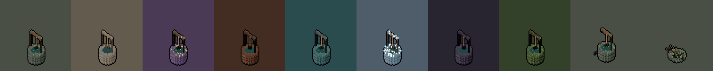 | |||||||||
| sluiceGate | 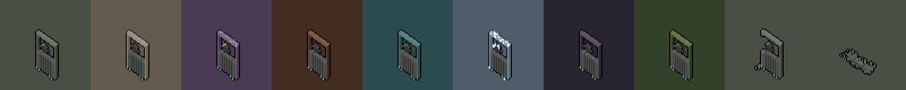 | |||||||||
| waterBarrel | 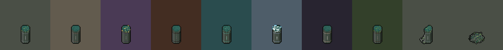 | |||||||||
| pipeJunction | 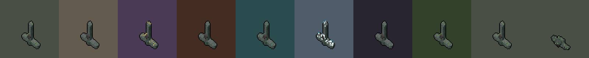 | |||||||||
| drainGrate | 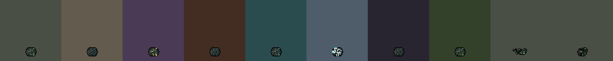 | |||||||||
| bucketStack | 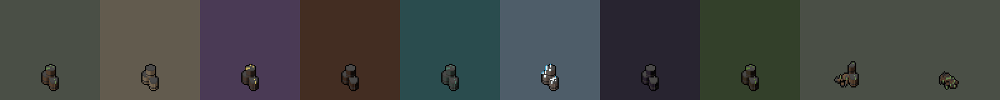 | |||||||||
Built for the Ossuary and mixed into its rooms (data/dressing BIOME_PIECES). Shown in every biome's materials, then broken and wrecked at home.
| piece | Cisterns | Ossuary | Fungal Reach | Cinderworks | Drowned Vault | Rimehollow | Sable Court | Wyrm Deeps | broken | wrecked |
|---|---|---|---|---|---|---|---|---|---|---|
| boneThrone | 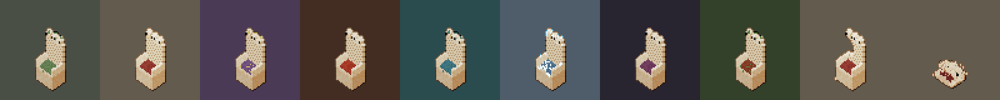 | |||||||||
| ossuaryShelf | 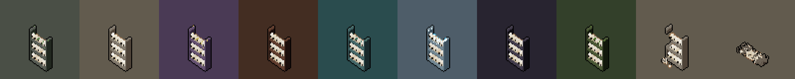 | |||||||||
| coffin | 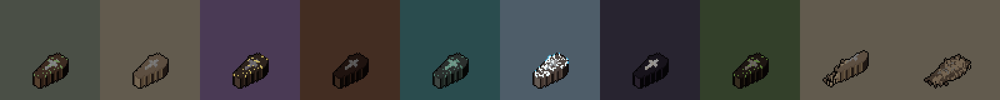 | |||||||||
| skullPile | 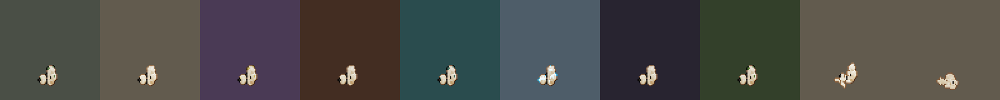 | |||||||||
| reliquary | 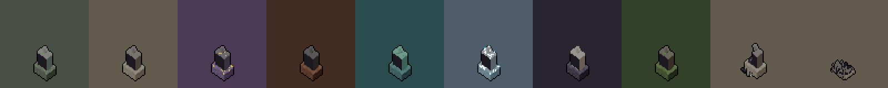 | |||||||||
Built for the Fungal Reach and mixed into its rooms (data/dressing BIOME_PIECES). Shown in every biome's materials, then broken and wrecked at home.
| piece | Cisterns | Ossuary | Fungal Reach | Cinderworks | Drowned Vault | Rimehollow | Sable Court | Wyrm Deeps | broken | wrecked |
|---|---|---|---|---|---|---|---|---|---|---|
| giantCap | 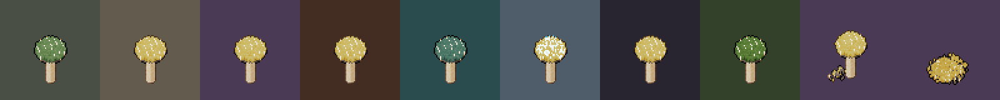 | |||||||||
| sporePod | 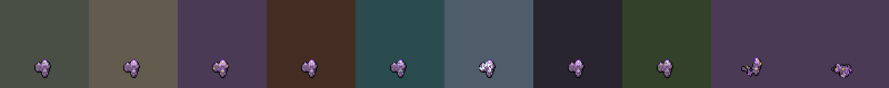 | |||||||||
| rottingLog | 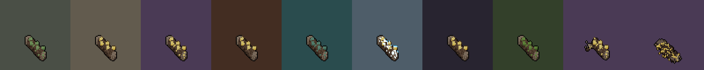 | |||||||||
| mushroomRing | 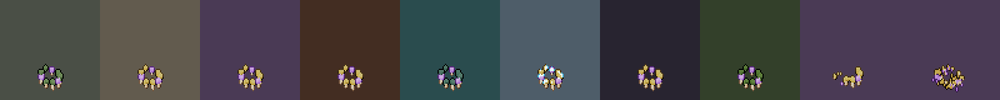 | |||||||||
| rootKnot | 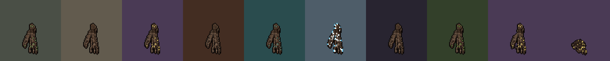 | |||||||||
Built for the Cinderworks and mixed into its rooms (data/dressing BIOME_PIECES). Shown in every biome's materials, then broken and wrecked at home.
| piece | Cisterns | Ossuary | Fungal Reach | Cinderworks | Drowned Vault | Rimehollow | Sable Court | Wyrm Deeps | broken | wrecked |
|---|---|---|---|---|---|---|---|---|---|---|
| anvil | 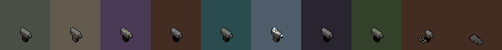 | |||||||||
| forge | 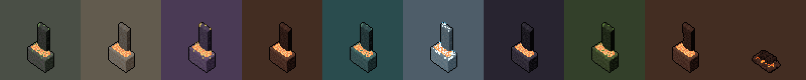 | |||||||||
| coalCart | 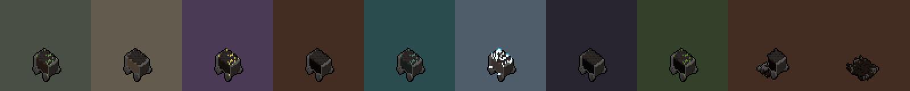 | |||||||||
| quenchTrough | 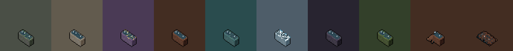 | |||||||||
| chainHoist | 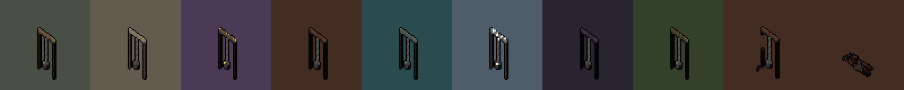 | |||||||||
Built for the Drowned Vault and mixed into its rooms (data/dressing BIOME_PIECES). Shown in every biome's materials, then broken and wrecked at home.
| piece | Cisterns | Ossuary | Fungal Reach | Cinderworks | Drowned Vault | Rimehollow | Sable Court | Wyrm Deeps | broken | wrecked |
|---|---|---|---|---|---|---|---|---|---|---|
| anchor | 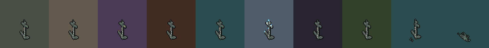 | |||||||||
| netRack | 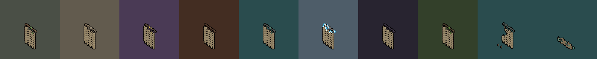 | |||||||||
| coral | 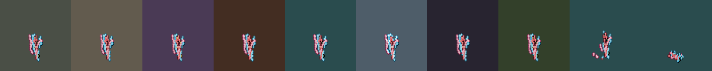 | |||||||||
| boatHull | 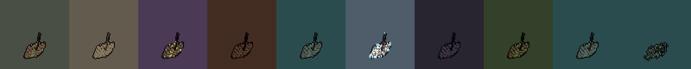 | |||||||||
| kelp | 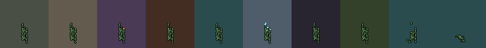 | |||||||||
Built for the Rimehollow and mixed into its rooms (data/dressing BIOME_PIECES). Shown in every biome's materials, then broken and wrecked at home.
| piece | Cisterns | Ossuary | Fungal Reach | Cinderworks | Drowned Vault | Rimehollow | Sable Court | Wyrm Deeps | broken | wrecked |
|---|---|---|---|---|---|---|---|---|---|---|
| iceCrystal | 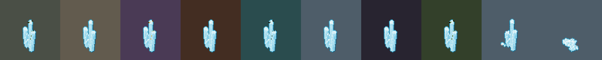 | |||||||||
| frozenBarrel | 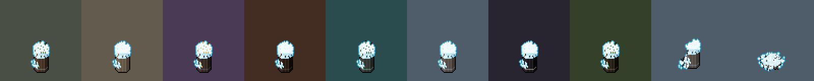 | |||||||||
| furRack | 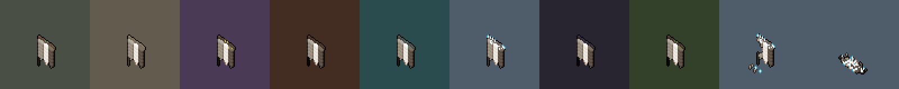 | |||||||||
| sled | ||||||||||
| snowDrift | ||||||||||
Built for the Sable Court and mixed into its rooms (data/dressing BIOME_PIECES). Shown in every biome's materials, then broken and wrecked at home.
| piece | Cisterns | Ossuary | Fungal Reach | Cinderworks | Drowned Vault | Rimehollow | Sable Court | Wyrm Deeps | broken | wrecked |
|---|---|---|---|---|---|---|---|---|---|---|
| statue | ||||||||||
| throne | ||||||||||
| longTable | ||||||||||
| bust | ||||||||||
| harp | ||||||||||
| velvetCarpet | ||||||||||
Built for the Wyrm Deeps and mixed into its rooms (data/dressing BIOME_PIECES). Shown in every biome's materials, then broken and wrecked at home.
| piece | Cisterns | Ossuary | Fungal Reach | Cinderworks | Drowned Vault | Rimehollow | Sable Court | Wyrm Deeps | broken | wrecked |
|---|---|---|---|---|---|---|---|---|---|---|
| dragonRibs | ||||||||||
| eggClutch | ||||||||||
| hoardHeap | ||||||||||
| scorchedPillar | ||||||||||
| clawSlab | ||||||||||
Each biome hangs mostly its own; shields, trophies and chains appear everywhere at a lower weight.
| piece | Cisterns | Ossuary | Fungal Reach | Cinderworks | Drowned Vault | Rimehollow | Sable Court | Wyrm Deeps |
|---|---|---|---|---|---|---|---|---|
| pipes | ||||||||
| sluiceWheel | ||||||||
| algae | ||||||||
| chains | ||||||||
| shield | ||||||||
| skullNiche | ||||||||
| boneGarland | ||||||||
| trophy | ||||||||
| shelfFungus | ||||||||
| rootCurtain | ||||||||
| bellows | ||||||||
| glowSeam | ||||||||
| net | ||||||||
| barnacles | ||||||||
| icicles | ||||||||
| rime | ||||||||
| tapestry | ||||||||
| portrait | ||||||||
| clawScores | ||||||||
| hungScales | ||||||||
Scattered by room condition: destroyed rooms carry the most.
| piece | Cisterns | Ossuary | Fungal Reach | Cinderworks | Drowned Vault | Rimehollow | Sable Court | Wyrm Deeps |
|---|---|---|---|---|---|---|---|---|
| rubble | ||||||||
| bones | ||||||||
| splinters | ||||||||
| papers | ||||||||
| shards | ||||||||
| cobweb | ||||||||
Torches are placed by the sim and light the light map; no flame burns gold.
| piece | Cisterns | Ossuary | Fungal Reach | Cinderworks | Drowned Vault | Rimehollow | Sable Court | Wyrm Deeps |
|---|---|---|---|---|---|---|---|---|
| torches | ||||||||
| chests, shut | ||||||||
| chests, open | ||||||||
The stairs, remade (part two §11).
| piece | Cisterns | Ossuary | Fungal Reach | Cinderworks | Drowned Vault | Rimehollow | Sable Court | Wyrm Deeps |
|---|---|---|---|---|---|---|---|---|
| gates | ||||||||
Light state and conditions (part two §12).
| piece | Cisterns | Ossuary | Fungal Reach | Cinderworks | Drowned Vault | Rimehollow | Sable Court | Wyrm Deeps |
|---|---|---|---|---|---|---|---|---|
| light: lit · half · dark | ||||||||
| burning · corroding · poisoned · bleeding · chilled · frozen · shocked · wet · blinded · frightened · charmed | ||||||||
| stunned · prone · restrained · slowed · sapped · marked · cursed · hasted · blessed · raging · invulnerableBriefly | ||||||||
A companion’s plot by background (part two §16).
| piece | Cisterns | Ossuary | Fungal Reach | Cinderworks | Drowned Vault | Rimehollow | Sable Court | Wyrm Deeps |
|---|---|---|---|---|---|---|---|---|
| soldier | ||||||||
| acolyte | ||||||||
| sage | ||||||||
| criminal | ||||||||
| entertainer | ||||||||
| folkHero | ||||||||
| guildArtisan | ||||||||
| hauntedOne | ||||||||
| noble | ||||||||
| outlander | ||||||||
| charlatan | ||||||||
| urchin | ||||||||
| the hearth | ||||||||
| stall · chronicler | ||||||||
| stall · weaponsmith | ||||||||
| stall · armourer | ||||||||
| stall · alchemist | ||||||||
| stall · arcanist | ||||||||
| stall · tinkerer | ||||||||
| palisade | ||||||||